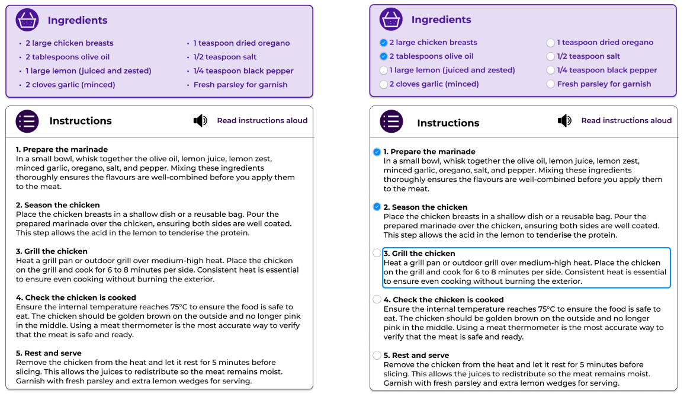

UX / Accessibility Design
Accessible
Health & Nutrition App
Role
UX Designer
Platform
Web App
Target
WCAG 2.2 (A–AAA)
Overview
This project involved designing an accessible health and nutrition web application for users with physical, cognitive, visual, and auditory impairments. The goal was to create a platform that supports independent cooking, reduces cognitive load, and ensures nutritional information is perceivable and operable for all users.
User Research
"I struggle to read ingredients when the contrast is low."
"Too much text overwhelms me — I lose track easily."
"Small buttons are hard to tap when my hands shake."
Initial pain points (placeholder)

Design Goals
Cognitive Simplicity
The interface was restructured into a linear, step‑by‑step flow to reduce cognitive load. Each task—searching, cooking, tracking nutrition—was broken into digestible, predictable steps.
Inclusive Interaction
Touch targets, spacing, and focus states were designed to support users with motor impairments, while ARIA labels ensured full compatibility with assistive technologies.
WCAG 2.2 Implementation
Selected Guidelines (A, AA, AAA)
-
01
1.4.6 Contrast Enhanced (AAA)
Critical nutritional data uses a 7:1 contrast ratio for maximum clarity.
-
02
2.5.5 Target Size (AAA)
All interactive elements meet the 44×44px minimum for motor accessibility.
-
03
3.3.1 Error Identification (A)
Errors are described in text, not colour alone, supporting cognitive accessibility.
-
04
2.4.7 Focus Visible (AA)
A high‑contrast focus ring ensures full keyboard navigation.
-
05
3.1.5 Reading Level (AAA)
Instructions use plain language and short sentences to reduce cognitive load.
Final Outcome
The final design supports independent cooking through clear hierarchy, simplified steps, and accessible nutritional information. The interface balances visual clarity with inclusive interaction patterns.
High‑fidelity screens (placeholder)

Post‑Testing Update
Usability testing revealed that users often lost track of which ingredients they had already used. To address this, a checklist system was added to the recipe steps, with large tap targets and screen‑reader‑friendly states (“Checked / Not checked”).
Updated ingredient checklist (placeholder)
